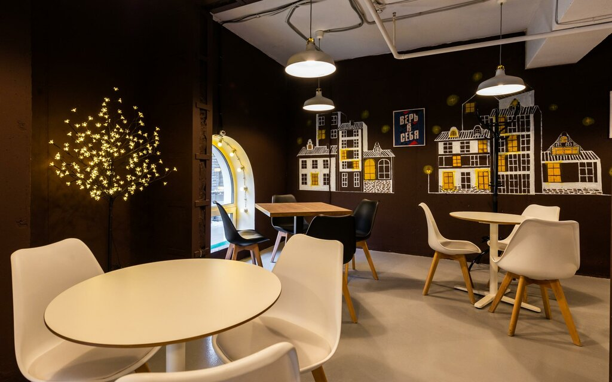
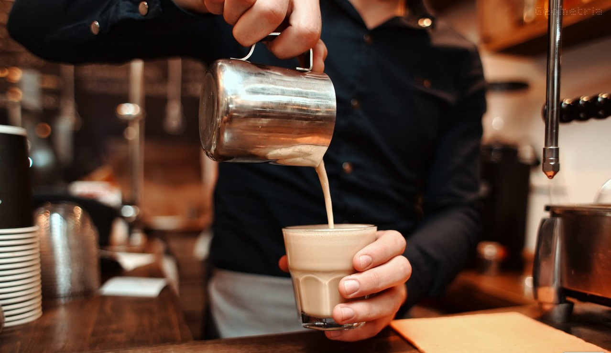
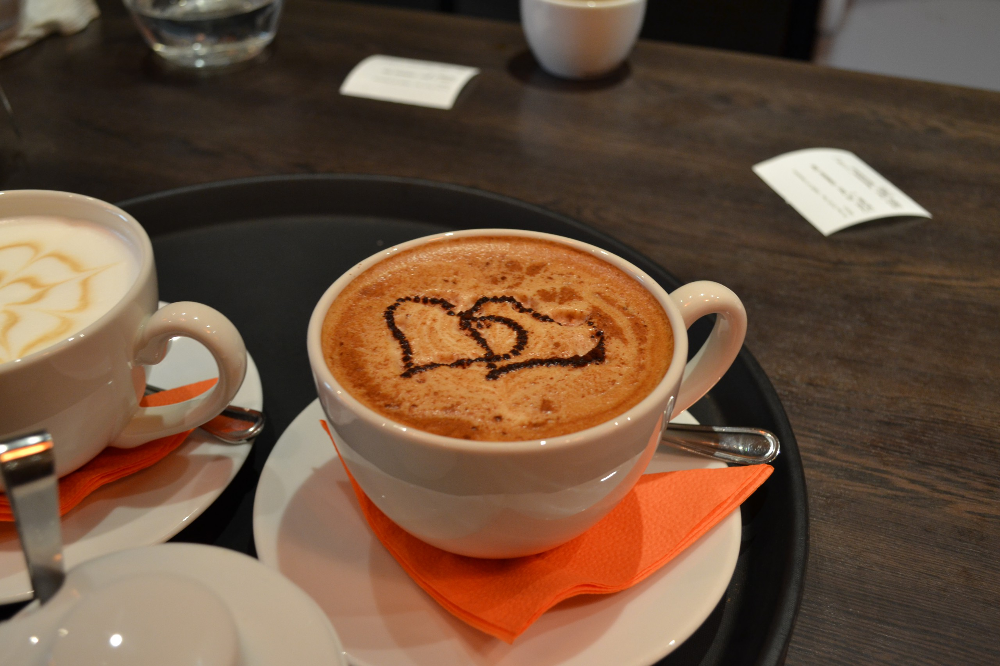
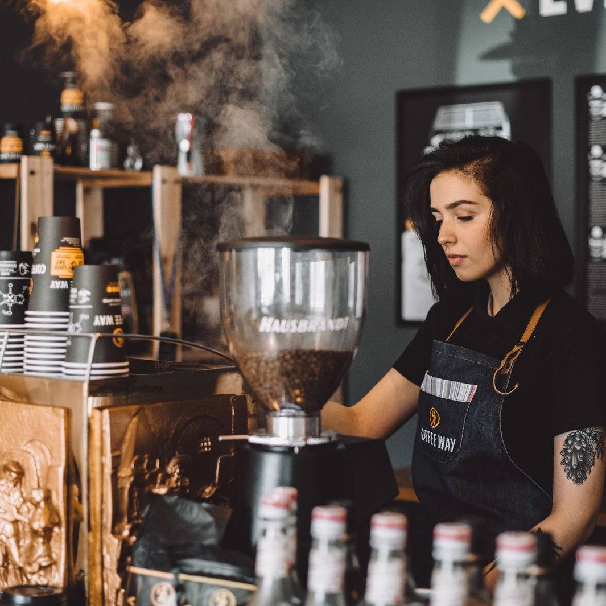

25-60-60")
Кофейня
"Кофейня" стильно выглядит как изнутри, так и снаружи. Здесь простые, но изящные столики и мягкие удобные стулья необычных очертаний, бесплатный wi-fi и свежая пресса, внимательное обслуживание. Это отличное место как для людей, желающих насладиться кофе не отрываясь от дел - сюда хорошо заглянуть в разгар трудового дня, так и для тех, кто хочет отдохнуть после напряженного рабочего дня и провести приятно время в дружеской компании.
   В нашем огромном мире часто не хватает простого общения, тепла, понимания. Люди постоянно куда-то бегут, торопятся, не обращают внимания друг на друга... и очень часто чувствуют себя одинокими. И хочется просто остановиться в уютном месте, выпить ароматный кофе, пообщаться с незнакомцем или незнакомкой за соседним столиком и... помечтать.